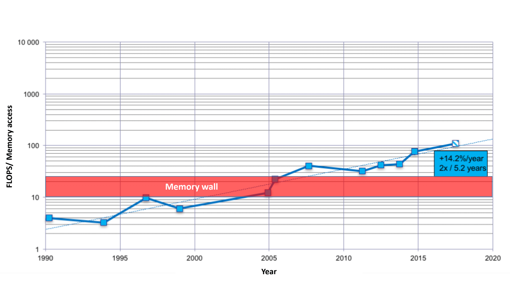
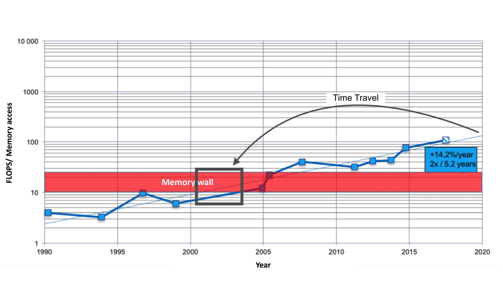
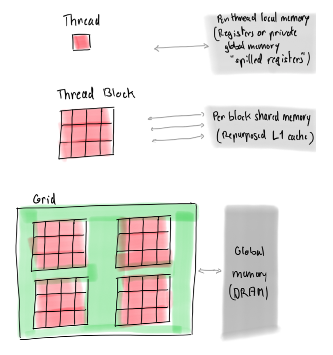
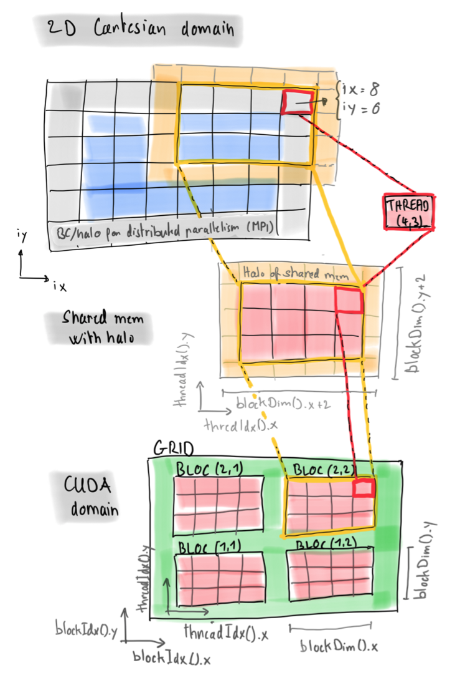
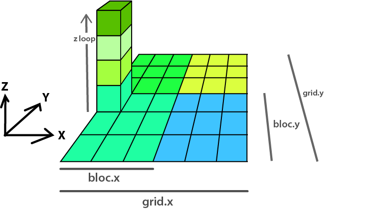

Agenda
📚 Projects Q&A, Controlling shared memory and registers (on-chip)
💻 MPI & Advanced optimisations Q&A
🚧 Exercises: Q&A
learn how to use shared memory (on-chip) to avoid main memory accesses and communicate between threads; and
learn how to control registers for storing intermediate results on-chip.
We will start with a brief recap on the peak performance of current hardware and on performance evaluation of iterative stencil-based PDE solvers.
The performance of most scientific applications nowadays is bound by memory access speed (memory-bound) rather than by the speed computations can be done (compute-bound).
The reason is that current GPUs (and CPUs) can do many more computations in a given amount of time than they can access numbers from main memory.
This situation is the result of a much faster increase of computation speed with respect to memory access speed over the last decades, until we hit the "memory wall" at the beginning of the century:
 Source: John McCalpin, Texas Advanced Computing Center (modified)
This imbalance can be quantified by dividing the computation peak performance [GFLOP/s] by the memory access peak performance [GB/s] and multiplied by the size of a number in Bytes (for simplicity, theoretical peak performance values as specified by the vendors can be used). For example for the Tesla P100 GPU, it is:
(here computed with double precision values taken from the vendor's product specification sheet).
So we can do 58 floating point operations per number read from main memory or written to it.
As a consequence, we can consider floating point operations be "for free" when we work in the memory-bounded regime as in this lecture.
Naturally, when realizing that our PDE solvers' are memory-bound, we start to analyze the memory throughput.
In lecture 6, we have though seen that the total memory throughput is often not a good metric to evaluate the optimality of an implementation.
As a result, we defined the effective memory throughput, , metric for iterative stencil-based PDE solvers.
The effective memory access [GB] Sum of:
twice the memory footprint of the unknown fields, , (fields that depend on their own history and that need to be updated every iteration)
known fields, , that do not change every iteration.
The effective memory access divided by the execution time per iteration, [sec], defines the effective memory throughput, [GB/s]:
The upper bound of is as measured, e.g., by McCalpin, 1995 for CPUs or a GPU analogue. Defining the metric, we assume that:
we evaluate an iterative stencil-based solver,
the problem size is much larger than the cache sizes and
the usage of time blocking is not feasible or advantageous (reasonable for real-world applications).
When solving the exercises later, we invite you to a "time travel"!
We will ask you to solve them first on the consumer electronics GPU Titan Xm in double precision, even though its double precision floating point peak performance is very low; then, we will ask you to rerun your solutions on the Tesla V100 GPUs.
Why do we talk about "time travel"?
It is because the Titan Xm's ratio between compute access speed and memory access speed is much lower for double precision than for single precision.
The ratio for double precision corresponds to what was common in the early 2000s. So we "time-travel" 15 to 20 years back!
 Source: John McCalpin, Texas Advanced Computing Center (modified)
Let us compute the Titan Xm's ratio for double precision (the specifications are, e.g., found here):
So we can do only 5 floating point operations per number read from main memory or written to it.
As a side note, in single precision, we can do 80 floating point operations per number read from main memory or written to it:
We now want get a high-level overview on how we can control on-chip memory in order to reduce redundant main memory access.
In the essence, we want to store values that we need to access multiple times with a same thread or threadblock in on-chip memory, in order to avoid accessing them multiple times in main memory.
Let us first look at the different kinds of memory.
There is memory private to each thread ("local memory"), shared between thread blocks ("shared memory") and shared between all threads of the grid ("global memory" or "main memory").

To use shared memory for our PDE solvers, we can use the strategy depicted in the following image:

In this approach, we allocate a cell in shared memory per each thread of the block, plus a halo on all sides.
The threads at the boundaries of the block will read from there when doing finite differences.
As a result, we will need to read the data corresponding to a thread block (see image) only once to shared memory and then we can compute all the required finite differences reading only from there.
Making basic use of "local memory" is very simple: it is enough to define a variable inside a kernel and it will be allocated private to the each thread.
Scalars (and possibly small arrays) will be stored in registers if the kernel does not use too many (else it is stored in global memory as noted earlier).
This "control" of register usage becomes often particularly useful when each thread does not only compute the results for one cell but for multiple cells, e.g., adjacent in the last dimension.
In that case, the registers can store, e.g., intermediate results.
The following image shows the scenario where each thread computes the results for a column of cells in z dimension (this can be achieved by simply doing a loop over the z dimension):

👉 See Logistics for submission details (this exercise doesn't need to be handed-in).
The goal of this exercise is to:
ensure you can run a Julia notebook on your octopus node
refresh how to establish the peak memory throughput of your GPU
👉 Make sure:
You are logged-in to your node on octopus (how-to)
Head to /scratch/<username>/lecture09/
Get your Julia environment ready so that you can start a Jupyter notebook server
Open the introduction notebook Benchmarking memory copy and establishing peak memory access performance (/scratch/<username>/lecture09/l6_1-gpu-memcopy.ipynb)
Run the notebook to establish the performance baseline (you should have a copy of it in your lecture09 folder on octopus).
👉 See Logistics for submission details.
The goal of this exercise is to:
learn how to use shared memory (on-chip) to avoid main memory accesses.
Prerequisites:
the introduction notebook Benchmarking memory copy and establishing peak memory access performance (l6_1-gpu-memcopy.ipynb)
the Data transfer optimisation notebook (lecture6_ex1.ipynb)
This content is distributed under MIT licence. Authors: S. Omlin (CSCS), L. Räss (ETHZ).
👉 Download the lecture10_ex2.ipynb notebook and edit it.
We will again use the packages CUDA, BenchmarkTools and Plots to create a little performance laboratory:
] activate .] instantiateusing CUDA
using BenchmarkTools
using PlotsLet us consider the same 2-D heat diffusion solver as in the second part of the first Data transfer optimisation notebook (lecture6_ex1.ipynb):
function diffusion2D()
# Physics
lam = 1.0 # Thermal conductivity
c0 = 2.0 # Heat capacity
lx, ly = 10.0, 10.0 # Length of computational domain in dimension x and y
# Numerics
nx, ny = 32*2, 32*2 # Number of gridpoints in dimensions x and y
nt = 100 # Number of time steps
dx = lx/(nx-1) # Space step in x-dimension
dy = ly/(ny-1) # Space step in y-dimension
_dx, _dy = 1.0/dx, 1.0/dy
# Array initializations
T = CUDA.zeros(Float64, nx, ny) # Temperature
T2 = CUDA.zeros(Float64, nx, ny) # 2nd array for Temperature
Ci = CUDA.zeros(Float64, nx, ny) # 1/Heat capacity
# Initial conditions
Ci .= 1/c0 # 1/Heat capacity (could vary in space)
T .= CuArray([10.0*exp(-(((ix-1)*dx-lx/2)/2)^2-(((iy-1)*dy-ly/2)/2)^2) for ix=1:size(T,1), iy=1:size(T,2)]) # Initialization of Gaussian temperature anomaly
T2 .= T; # Assign also T2 to get correct boundary conditions.
# Time loop
dt = min(dx^2,dy^2)/lam/maximum(Ci)/4.1 # Time step for 2D Heat diffusion
opts = (aspect_ratio=1, xlims=(1, nx), ylims=(1, ny), clims=(0.0, 10.0), c=:davos, xlabel="Lx", ylabel="Ly") # plotting options
@gif for it = 1:nt
diffusion2D_step!(T2, T, Ci, lam, dt, _dx, _dy) # Diffusion time step.
heatmap(Array(T)'; opts...) # Visualization
T, T2 = T2, T # Swap the aliases T and T2 (does not perform any array copy)
end
endfunction diffusion2D_step!(T2, T, Ci, lam, dt, _dx, _dy)
threads = (32, 8)
blocks = (size(T2,1)÷threads[1], size(T2,2)÷threads[2])
@cuda blocks=blocks threads=threads update_temperature!(T2, T, Ci, lam, dt, _dx, _dy)
endfunction update_temperature!(T2, T, Ci, lam, dt, _dx, _dy)
ix = (blockIdx().x-1) * blockDim().x + threadIdx().x
iy = (blockIdx().y-1) * blockDim().y + threadIdx().y
if (ix>1 && ix<size(T2,1) && iy>1 && iy<size(T2,2))
@inbounds T2[ix,iy] = T[ix,iy] + dt*Ci[ix,iy]*(
- ((-lam*(T[ix+1,iy] - T[ix,iy])*_dx) - (-lam*(T[ix,iy] - T[ix-1,iy])*_dx))*_dx
- ((-lam*(T[ix,iy+1] - T[ix,iy])*_dy) - (-lam*(T[ix,iy] - T[ix,iy-1])*_dy))*_dy
)
end
return
endMoreover, for benchmarking activities, we will require again the following arrays and scalars (use again the nx=ny found best in the introduction notebook; you can modify the value if it is not right for you):
nx = ny = 512*32
T = CUDA.rand(Float64, nx, ny);
T2 = CUDA.rand(Float64, nx, ny);
Ci = CUDA.rand(Float64, nx, ny);
lam = _dx = _dy = dt = rand();In the introduction notebook, we determined how the performance of memory copy behaved with in function of the number of threads per blocks. We will do the same now for the temperature update kernel.
Determine the effective memory throughput, T_eff, of the kernel update_temperature! in function of the number of threads, fixing the number of threads in x dimension to 32.
T_eff rather than T_tot).# solution
max_threads = attribute(device(),CUDA.DEVICE_ATTRIBUTE_MAX_THREADS_PER_BLOCK)
thread_count = []
throughputs = []
for pow = 0:Int(log2(max_threads/32))
threads = (32, 2^pow)
blocks = #...
t_it = @belapsed begin @cuda #...
T_eff = #...
push!(thread_count, prod(threads))
push!(throughputs, T_eff)
println("(threads=$threads) T_eff = $(T_eff)")
endSave the best thread/block configuration measured for reusing it later (adapt the code if your variable names above do not match):
T_tot_max, index = findmax(throughputs)
threads = (32, thread_count[index]÷32)
blocks = (nx÷threads[1], ny÷threads[2])You could probably observe that this kernel is more sensitive to the thread/block configuration than the memory copy kernel. The reason is that the thread/block configuration directly influences the way the fast memory situated on-chip (here high-level cache and registers) is used in order to avoid redundant main memory accesses. We will now explicitly control part of the the on-chip memory usage, using so called "shared memory", which is repurposed high-level cache. This will give some insights on how certain parameters relate to on-chip memory usage. However, we will not implement a diffusion kernel with shared memory at once, but in little steps.
Let us start with relating the update_temperature! kernel back to the triad memory copy kernel investigated in the introduction notebook. We can observe that if we remove the derivatives from the update_temperature! kernel then we end up with a simple triad memory copy kernel, except for an additional if-statement to avoid updating the boundary values (for simplicity, we do not remove the unused function arguments which we will use again in the next experiments):
function update_temperature!(T2, T, Ci, lam, dt, _dx, _dy)
ix = (blockIdx().x-1) * blockDim().x + threadIdx().x
iy = (blockIdx().y-1) * blockDim().y + threadIdx().y
if (ix>1 && ix<size(T2,1) && iy>1 && iy<size(T2,2))
@inbounds T2[ix,iy] = T[ix,iy] + dt*Ci[ix,iy]
end
return
endThis kernel should consequently achieve a T_tot of essentially the value of T_peak (if an optimal thread/block configuration is used). Moreover, for this case T_eff = T_tot. Let us verify quickly that T_eff is essentially equal T_peak here (measured 561 GB/s with the Tesla P100 GPU):
t_it = @belapsed begin @cuda blocks=$blocks threads=$threads update_temperature!($T2, $T, $Ci, $lam, $dt, $_dx, $_dy); synchronize() end
T_eff = (2*1+1)*1/1e9*nx*ny*sizeof(Float64)/t_itWe will do now our first shared memory experiment with this simple triad kernel.
Modify the above update_temperature! kernel (which now does just triad memory copy) as follows: read the values of the temperature array T into shared memory; then, subsequently, read the temperature values from there when updating T2. To help you, the structure of the kernel is already given; you only need to complete the unfinished lines.
@cuDynamicSharedMem to allocate the required shared memoryCUDA.DEVICE_ATTRIBUTE_MAX_THREADS_PER_BLOCK). The CUDA occupancy API lets query the maximum number of threads possible for a given kernel (see maxthreads).# hint
function update_temperature!(T2, T, Ci, lam, dt, _dx, _dy)
ix = (blockIdx().x-1) * blockDim().x + threadIdx().x
iy = (blockIdx().y-1) * blockDim().y + threadIdx().y
tx = # local thread id, x dimension
ty = # local thread id, y dimension
T_l = # allocation of a block-local temperature array (in shared memory)
@inbounds T_l[tx,ty] = # read the values of the temperature array `T` into shared memory
if (ix>1 && ix<size(T2,1) && iy>1 && iy<size(T2,2))
@inbounds T2[ix,iy] = #=read temperature values from shared memory=# + dt*Ci[ix,iy]
end
return
endLaunch the kernel requesting the required amount of shared memory; compute the T_eff achieved.
@cuda macro supports the keyword shmem to request the required amount of shared memory; note that it must be indicated in bytes (use sizeof() to get the number of bytes used by the datatype used).# solutionYou should not observe any significant change in T_eff compared to the previous kernel (measured as before 561 GB/s with the Tesla P100 GPU).
When we will add back the derivatives later, then each thread will read values on the left, right, bottom and top of it. We will want the threads to read the temperature values from the block-local array T_l, not from T anymore. However, right now each thread maps directly to a cell of T_l; thus, the threads at the boundary of the block would read out-of-bounds when reading the "neighbour cells". We therefore need to add a "halo" to T_l that will contain the required values.
Modify the update_temperature! kernel from Task 2 as follows: add a "halo" of size 1 to T_l on each side, i.e. on the left, right, bottom and top. To this purpose, you need to modify the allocation of T_l and adapt the local thread ids tx and ty accordingly. Then, launch the new kernel adjusting the required amount of shared memory and compute T_eff. To help you, the structure of the kernel is already given; you only need to complete the unfinished lines.
# hint
function update_temperature!(T2, T, Ci, lam, dt, _dx, _dy)
ix = (blockIdx().x-1) * blockDim().x + threadIdx().x
iy = (blockIdx().y-1) * blockDim().y + threadIdx().y
tx = # adjust the local thread id in y dimension
ty = # adjust the local thread id in y dimension
T_l = # adjust the shared memory allocation
@inbounds T_l[tx,ty] = T[ix,iy]
if (ix>1 && ix<size(T2,1) && iy>1 && iy<size(T2,2))
@inbounds T2[ix,iy] = T_l[tx,ty] + dt*Ci[ix,iy]
end
return
end
t_it = @belapsed begin @cuda blocks=$blocks threads=$threads shmem=#=adjust the shared memory=# update_temperature!($T2, $T, $Ci, $lam, $dt, $_dx, $_dy); synchronize() end
T_eff = (2*1+1)*1/1e9*nx*ny*sizeof(Float64)/t_itT_eff did certainly not significantly change, as you probably expected as we did not access more data than before (measured as before 561 GB/s with the Tesla P100 GPU).
Modify the update_temperature! kernel from Task 4 as follows: read the required values into the newly added halo of T_l. Then, compute again T_eff. To help you, the structure of the kernel is already given; you only need to complete the unfinished lines.
# hint
function update_temperature!(T2, T, Ci, lam, dt, _dx, _dy)
ix = (blockIdx().x-1) * blockDim().x + threadIdx().x
iy = (blockIdx().y-1) * blockDim().y + threadIdx().y
tx = threadIdx().x+1
ty = threadIdx().y+1
T_l = @cuDynamicSharedMem(eltype(T), (blockDim().x+2, blockDim().y+2))
@inbounds T_l[tx,ty] = T[ix,iy]
if (ix>1 && ix<size(T2,1) && iy>1 && iy<size(T2,2))
@inbounds if (threadIdx().x == 1) #=read the required values to the left halo of `T_l`=# end
@inbounds if (threadIdx().x == blockDim().x) #=read the required values to the right halo of `T_l`=# end
@inbounds if #=read the required values to the bottom halo of `T_l`=# end
@inbounds if #=read the required values to the top halo of `T_l`=# end
@inbounds T2[ix,iy] = T_l[tx,ty] + dt*Ci[ix,iy]
end
return
end
t_it = @belapsed begin @cuda blocks=$blocks threads=$threads shmem=prod($threads.+2)*sizeof(Float64) update_temperature!($T2, $T, $Ci, $lam, $dt, $_dx, $_dy); synchronize() end
T_eff = (2*1+1)*1/1e9*nx*ny*sizeof(Float64)/t_itT_eff certainly decreased a bit due to the additional read-in of the halo of T_l (measured 538 GB/s with the Tesla P100 GPU), except if the compiler would have understood that the halo is never used and therefore never done these additional reads. In order to create the 2-D diffusion kernel using shared memory, the last step is to add back the derivatives.
Modify the update_temperature! kernel from Task 5 as follows: add back the derivatives that we removed at the beginning of the notebook and modify them to read the temperature from T_l rather then from T. Then, verify that the diffusion works as expected and compute again T_eff.
To help you, the structure of the kernel is already given; you only need to complete the unfinished lines.
# hint
function update_temperature!(T2, T, Ci, lam, dt, _dx, _dy)
ix = (blockIdx().x-1) * blockDim().x + threadIdx().x
iy = (blockIdx().y-1) * blockDim().y + threadIdx().y
tx = threadIdx().x+1
ty = threadIdx().y+1
T_l = @cuDynamicSharedMem(eltype(T), (blockDim().x+2, blockDim().y+2))
@inbounds T_l[tx,ty] = T[ix,iy]
if (ix>1 && ix<size(T2,1) && iy>1 && iy<size(T2,2))
@inbounds if (threadIdx().x == 1) T_l[tx-1,ty] = T[ix-1,iy] end
@inbounds if (threadIdx().x == blockDim().x) T_l[tx+1,ty] = T[ix+1,iy] end
@inbounds if (threadIdx().y == 1) T_l[tx,ty-1] = T[ix,iy-1] end
@inbounds if (threadIdx().y == blockDim().y) T_l[tx,ty+1] = T[ix,iy+1] end
sync_threads()
@inbounds T2[ix,iy] = T_l[tx,ty] + dt*Ci[ix,iy]*(
# add the computation of the derivatives
# ...
)
end
return
end
diffusion2D()
t_it = @belapsed begin @cuda blocks=$blocks threads=$threads shmem=prod($threads.+2)*sizeof(Float64) update_temperature!($T2, $T, $Ci, $lam, $dt, $_dx, $_dy); synchronize() end
T_eff = (2*1+1)*1/1e9*nx*ny*sizeof(Float64)/t_itsync_threads() at the end of all reads into shared memory (i.e. T_l) in order to ensure that no thread tries to read a from a "neighboring cell" before it contains the required value.T_eff should not have decreased significantly when adding back the derivatives (measured, as in Task 5, 538 GB/s with the Tesla P100 GPU) even though they constitute the major part of the computations! This confirms one more time empirically that the performance of solvers as the above is essentially defined by how much we can avoid redundant main memory accesses.
Compute by how much percent you can improve the performance of the solver at most.
# solutionCongratulations! You have implemented a 2-D diffusion solver using shared memory!
👉 See Logistics for submission details.
The goal of this exercise is to:
learn how to control registers for storing intermediate results on-chip;
learn how to use shared memory (on-chip) to communicate between threads.
Prerequisites:
the introduction notebook Benchmarking memory copy and establishing peak memory access performance (l6_1-gpu-memcopy.ipynb)
the Data transfer optimisation notebook (lecture6_ex1.ipynb)
the second Data transfer optimisation notebook (Exercise 2 lecture10_ex2.ipynb)
This content is distributed under MIT licence. Authors: S. Omlin (CSCS), L. Räss (ETHZ).
👉 Download the lecture9_ex3.ipynb notebook and edit it.
We will again use the packages CUDA, BenchmarkTools and Plots to create a little performance laboratory:
] activate .] instantiateusing CUDA
using BenchmarkTools
using PlotsIn the last notebook (lecture9_ex2.ipynb), you learned how to explicitly control part of the the on-chip memory usage, using so called "shared memory". We will learn now how to control a second kind of fast memory on-chip: registers. To this purpose we will implement the cumsum! function on GPU - for the sake of simplicity, we will only write it for 3-D arrays.
Here is the documentation of the function cumsum!
help?> CUDA.cumsum!
cumsum!(B, A; dims::Integer)
Cumulative sum of A along the dimension dims, storing the result in B. See
also cumsum.And here is a small example of how cumsum! works for 3-D arrays:
A = CUDA.ones(4,4,4)
B = CUDA.zeros(4,4,4)
cumsum!(B, A; dims=1)
cumsum!(B, A; dims=2)
cumsum!(B, A; dims=3)For benchmarking activities, we will allocate again large arrays, matching closely the number of grid points of the array size found best in the introduction notebook (you can modify the value if it is not right for you):
nx = ny = nz = 512
A = CUDA.rand(Float64, nx, ny, nz);
B = CUDA.zeros(Float64, nx, ny, nz);Moreover, we preallocate also an array to store reference results obtained from CUDA.cumsum! for verification.
B_ref = CUDA.zeros(Float64, nx, ny, nz);Now, we are set up to get started.
If we only consider main memory access, then the cumsum! will ideally need to read one array (A) and write one array (B). No other main memory access should be required. Let us therefore create an ad hoc adaption of the effective memory throughput metric for iterative PDE solvers (presented in the second notebook) to this problem. We will call the metric T_eff_cs and compute it as follows: T_eff_cs = 2*1/1e9*nx*ny*nz*sizeof(Float64)/t_it
The upper bound of T_eff_cs is given by the maximum throughput achievable when copying exactly one aray to another. For this specific case, you might have measured in our benchmarks in the introduction notebook a slightly less good performance (measured 550 GB/s with the Tesla P100 GPU) then what we established as T_peak. Thus, we will consider here this measured value to be the upper bound of T_eff_cs.
We will now adapt the corresponding 2-D memory copy kernel in the most straightforward way to work for 3-D arrays. Then, we will modify this memory copy code in little steps until we have a well performing cumsum! GPU function.
Here is the adapted memory copy kernel from the introduction notebook and the T_tot we achieve with it (for the first two dimensions, we use again the thread/block configuration that we found best in the introduction notebook and we use one thread in the third dimension; you can modify the values if it is not right for you):
A and B is reversed in comparison with the previous notebooks in order to match the documentation of cumsum!.function memcopy!(B, A)
ix = (blockIdx().x-1) * blockDim().x + threadIdx().x
iy = (blockIdx().y-1) * blockDim().y + threadIdx().y
iz = (blockIdx().z-1) * blockDim().z + threadIdx().z
@inbounds B[ix,iy,iz] = A[ix,iy,iz]
return nothing
endthreads = (32, 8, 1)
blocks = nx.÷threads
t_it = @belapsed begin @cuda blocks=$blocks threads=$threads memcopy!($B, $A); synchronize() end
T_tot = 2*1/1e9*nx*ny*nz*sizeof(Float64)/t_itLet us first implement the cummulative sum over the third dimension (index iz). The first step is to read in A (and write B) in a way that will later allow to easily do the required cumsums, which is an inherently serial operation. However, we want to try to avoid a serious degradation of the memory throughput when doing so.
Modify the above memcopy! kernel to read in A and write B in a serial manner with respect to the third dimension (index iz), i.e., with parallelization only over the first two dimensions (index ix and iy). Launch the kernel with the same thread configuration as above and adapt the the block configuration for the third dimension correctly. Verify the correctness of your kernel. Then, compute T_tot and explain the measured performance.
iz as loop index as it will replace the previous iz computed from the thread location in the grid.≈ allows to check if two arrays contain the same values (within a tolerance). Use this to verify your memory copy kernel.# hint
function memcopy!(B, A)
ix = (blockIdx().x-1) * blockDim().x + threadIdx().x
iy = (blockIdx().y-1) * blockDim().y + threadIdx().y
for iz #...
#...
end
return nothing
end
threads = (32, 8, 1)
blocks = (nx÷threads[1], ny÷threads[2], 1)# Verification
B .= 0.0;
@cuda #...
B ≈ A# Performance
t_it = @belapsed begin #...# end
T_tot = 2*1/1e9*nx*ny*nz*sizeof(Float64)/t_itGreat! You just implemented a so called grid-stride loop. It exhibits a good memory access pattern and it allows to easily reuse, e.g., intermediate results from previous iterations in the loop. You probably observe a T_tot that is a bit below the one measured in the previous experiment (measured 520 GB/s with the Tesla P100 GPU). There is certainly room to improve this memory copy kernel a bit, but we will consider it sufficient in order to continue with this exercise.
Write a kernel cumsum_dim3! which computes the cumulative sum over the 3rd dimension of a 3-D array. To this purpose modify the memory copy kernel from Task 1. Verify the correctness of your kernel against CUDA.cumsum!. Then, compute T_eff_cs as defined above, explain the measured performance and compare it to the one obtained with the generic CUDA.cumsum!.
cumsum_iz before the loop and initialize it to 0.0 in order to cumulate the sum.≈ allows to check if two arrays contain the same values (within a tolerance). Use this to verify your results against CUDA.cumsum! (remember that for the verification, we already preallocated an array B_ref at the beginning, which you can use now).# hint
function cumsum_dim3!(B, A)
ix = (blockIdx().x-1) * blockDim().x + threadIdx().x
iy = (blockIdx().y-1) * blockDim().y + threadIdx().y
cumsum_iz = 0.0
for iz #...
#...
end
return nothing
end
# Verification
@cuda #...
CUDA.cumsum!(B_ref, A; dims=3);
B ≈ B_ref# Performance
t_it = @belapsed begin @cuda #...# end
T_eff_cs = 2*1/1e9*nx*ny*nz*sizeof(Float64)/t_itt_it = @belapsed begin CUDA.cumsum!($B, $A; dims=3); synchronize() end
T_eff_cs = 2*1/1e9*nx*ny*nz*sizeof(Float64)/t_itYou should observe no significant difference between T_eff_cs measured here and T_tot computed in Task 1 (measured 520 GB/s with the Tesla P100 GPU). In fact, scalar variables defined in a kernel, like cumsum_iz, will be stored in registers as long as there are enough available (if not, then so called register spilling to main memory takes place). As access to register is extremely fast, the summation added in this Task did certainly not reduce the measured performance. It is, once again, the memory copy speed that completely determines the performance of the kernel, because we have successfully controlled the use of registers!
We will now implement the cummulative sum over the 2nd dimension (index iy). As for the previous implementation, the first step is to read in A (and write B) in a way that will later allow to easily do the required cumsums without exhibiting significant memory throughput degradation.
Modify the memcopy! kernel given in the beginning to read in A and write B in a serial manner with respect to the second dimension (index iy), i.e., with parallelization only over the first and the last dimensions (index ix and iz). Launch the kernel with the same amount of threads as in Task 1, however, place them all in the first dimension (i.e. use one thread in the second and third dimensions); adapt the the block configuration correctly. Verify the correctness of your kernel. Then, compute T_tot and explain the measured performance.
# hint
function memcopy!(B, A)
#...
return nothing
end
threads = (256, 1, 1)
blocks = #...# Verification
B .= 0.0;
@cuda #...
B ≈ A# Performance
t_it = @belapsed begin @cuda #...# end
T_tot = 2*1/1e9*nx*ny*nz*sizeof(Float64)/t_itYou should observe no big difference between T_tot measured here and T_tot computed in Task 1 (measured 519 GB/s with the Tesla P100 GPU) as this kernel is accessing memory also in large contiguous chunks.
Write a kernel cumsum_dim2! which computes the cumulative sum over the 2nd dimension of a 3-D array. To this purpose modify the memory copy kernel from Task 3. Verify the correctness of your kernel against CUDA.cumsum!. Then, compute T_eff_cs as defined above, explain the measured performance and compare it to the one obtained with the generic CUDA.cumsum!.
# hint
function cumsum_dim2!(B, A)
ix = (blockIdx().x-1) * blockDim().x + threadIdx().x
iz = (blockIdx().z-1) * blockDim().z + threadIdx().z
cumsum_iy = 0.0
#...
return nothing
end
# Verification
@cuda #...
CUDA.cumsum!(B_ref, A; dims=2);
B ≈ B_ref# Performance
t_it = @belapsed begin #...# end
T_eff_cs = 2*1/1e9*nx*ny*nz*sizeof(Float64)/t_itt_it = @belapsed #...
T_eff_cs = 2*1/1e9*nx*ny*nz*sizeof(Float64)/t_itAgain, you should observe no significant difference between T_eff_cs measured here and T_tot computed in Task 3 (measured 519 GB/s with the Tesla P100 GPU), as you probably expected.
We will now implement the cumulative sum over the 1st dimension (index ix). As for the previous implementations, the first step is to read in A (and write B) in a way that will later allow to easily do the required cumsums without exhibiting significant memory throughput degradation.
Modify the memcopy! kernel given in the beginning to read in A and write B in a serial manner with respect to the first dimension (index ix), i.e., with parallelization only over the second and third dimensions (index iy and iz). Launch the kernel with the same amount of threads as in Task 1, however, place them all in the second dimension (i.e. use one thread in the first and third dimensions); adapt the the block configuration correctly. Verify the correctness of your kernel. Then, think about what performance you expect, compute T_tot and explain the measured performance.
# hint
function memcopy!(B, A)
#...
return nothing
end
threads = (1, 256, 1)
blocks = #...# Verification
#...# Performance
t_it = #...
T_tot = #...You likely observe T_tot to be an order of magnitude or more below T_tot measured in Task 1 and 3 (measured 36 GB/s with the Tesla P100 GPU) because, in contrast to the previous kernels, this kernel accesses memory discontinuously with a large stride (of nx numbers) between each requested number.
There obviously is no point in creating a cumsum! kernel out of this memcopy! kernel: the performance could only be the same or worse (even though worse is not to expect). Hence, we will try to improve this memory copy kernel by accessing multiple contiguous numbers from memory, which we can achieve by launching more then one threads in the first dimension, adapting the loop accordingly.
Modify the memcopy! kernel from Task 5 to enable reading in 32 numbers at a time in the first dimension (index ix) rather than one number at a time as before. Launch the kernel with just 32 threads, all placed in the first dimension; adapt the the block configuration if you need to. Verify the correctness of your kernel. Then, think about what performance you expect now, compute T_tot and explain the measured performance.
# hint
function memcopy!(B, A)
#...
return nothing
end
threads = #...
blocks = #...# Verification
#...# Performance
t_it = #...
T_tot = #...T_tot should now be similar to the one obtained in Task 1 and 3 or even a bit better (measured 534 GB/s with the Tesla P100 GPU) thanks to the additional concurrency compared to the other memcopy! versions. We are therefore ready to implement the cummulative sum over the 1st dimension.
Write a kernel cumsum_dim1! which computes the cumulative sum over the 1st dimension of a 3-D array. To this purpose modify the memory copy kernel from Task 6. Verify the correctness of your kernel against CUDA.cumsum!. Then, compute T_eff_cs as defined above, explain the measured performance and compare it to the one obtained with the generic CUDA.cumsum!.
# hint
function cumsum_dim1!(B, A)
iy = (blockIdx().y-1) * blockDim().y + threadIdx().y
iz = (blockIdx().z-1) * blockDim().z + threadIdx().z
tx = threadIdx().x
shmem = @cuDynamicSharedMem(eltype(A), blockDim().x)
cumsum_ix = 0.0
#...
return nothing
end
# Verification
#...# Performance
t_it = #...
T_eff_cs = #...t_it = @belapsed begin CUDA.cumsum!($B, $A; dims=1); synchronize() end
T_eff_cs = 2*1/1e9*nx*ny*nz*sizeof(Float64)/t_itT_eff_cs is probably significantly less good than the one obtained for the cumulative sums over the other dimensions, but still quite good if we keep in mind the T_tot achieved with the first memcopy manner in Task 5. A good strategy for tackling an optimal implementation would certainly be to use warp-level functions (and if needed a more complex summation algorithm).